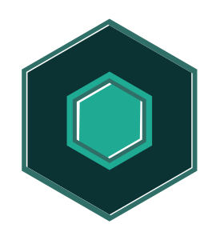
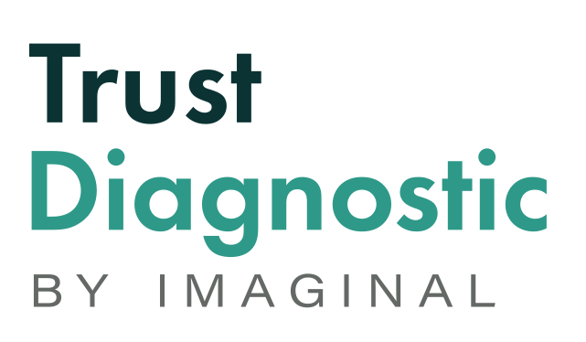

Platform features
In-depth, downloadable reports for every Trust Diagnostic
Expert recommendations for responding effectively to findings
Organizational and departmental results that help you pinpoint the areas that need the most attention
Easy side-by-side comparisons to spot trends and opportunities
Actionable insights that help you understand and improve results
Your personal hub for managing purchases, Trust Diagnostics, and reports
Team alignment
Help leaders build aligned and resilient teams by transforming how culture and trust are measured, tracked, and acted upon.
Affiliate program
We are dedicated to supporting you and your clients on their journey toward conscious, trust-centred leadership.
When culture breaks down, teams slow down
Rooted in emotional intelligence and conscious system thinking, designed for hybrid and remote environments, prioritizing human dynamics and organizational clarity.
Trust as a strategic advantage
Highlights trust as a strategic asset leaders can leverage to boost productivity, spark innovation, and enhance resilience.
Visibility into trust
See how trust is experienced across culture, communication, and processes, before it impacts performance.
From human dynamics to outcomes
Translates overlooked human dynamics into quantifiable business outcomes, so you can lead intentionally.
Designed to integrate with your practice, a clear, human-centric diagnostic for understanding team dynamics and aligning systems around trust.
From advice to indispensable impact
A dynamic feedback system that helps clients quickly monitor and adapt their culture, you become indispensable, not just helpful.
Turning trust into measurable impact
Links trust and engagement to speed, impact, and returns, the insights to make your case and drive change.
Real-time feedback for conscious leadership
Real-time feedback loops to improve alignment, deepen trust, and build effective partnerships.
Expands impact
When trust is embedded in culture, it elevates everyone it touches, expanding its reach across communities and industry.
Increases value
High-trust cultures unlock the full potential of people and performance, driving higher value across the organization.
Accelerates innovation
Trust fosters an environment where creativity thrives and teams move faster, from idea to implementation.
FAQ
The Trust Diagnostic measures the climate of trust within an organization and reveals whether it is operating in one of three zones:
Three core areas are measured: communication, processes, and culture. At an individual level, it reveals what each person is thinking, sensing, and feeling about the organization at that moment.
Engagement surveys focus on how employees feel about work, well-being, and performance. Culture surveys explore shared values and behaviours. The Trust Diagnostic specifically measures the level of trust at a given time, categorizing it as Stable, Increasing (Trust Dividend), or Decreasing (Trust Tax), helping leaders decide what action is needed.
Yes. The Trust Diagnostic is grounded in research that distinguishes three related but separate constructs: trustworthiness beliefs, trust itself, and trust behaviours. Rather than measuring sentiment or opinion, it assesses actual behaviours across three interdependent domains, Processes, Communication, and Culture, identified through consultation with Bjorn Ezelund, an Oslo-based organizational psychologist and trust specialist, so it captures how trust functions inside an organization, not just how it's perceived.
It's been field-tested across 60 organizations and developed by Dorothy Spence and Suki Laniado-Smith, co-creators of the Conscious Business Operating System™ (CBOS™). The diagnostic draws on our 7 Levels of Human Development and Awareness model, linking individual and organizational values to the reactive, structured, and adaptive stages that shape how a business grows.
Leaders receive a clear picture across the three domains, Processes, Communication, and Culture, along with an Overall Trust Level (Dividend, Stability Zone, or Tax) and key Insights showing exactly where trust is strong or weak.
As the first app built on the Conscious Business Operating System™, the Trust Diagnostic feeds directly into the Human Dynamics side of CBOS™. Results are interpreted with an experienced coach, who works with leaders to translate the Insights into next steps. There's no fixed, one-size-fits-all solution: final decisions rest with the organization's leaders.
Customization is not currently available.
Clearly explain why the Trust Diagnostic is being run, what the outcome could look like, how each person contributes, and what will happen with the results. All responses are completely anonymous, reports show only combined team or organizational results.
As frequently as appropriate, quarterly for some organizations, or after completing actions from the previous round.
An overall result in the Trust Tax zone, or any of the three dimensions sitting in a Trust Tax level, are the first areas to address, along with any statements flagged as a Critical Perception Gap.
Research consistently shows a direct link between high-trust cultures and commercial performance. Companies on the 100 Best Companies to Work For list have outperformed their peers by 2 to 3 percent in annual stock returns over a 26-year period, and Paul Zak's neuroscience research (Harvard Business Review, 2017) found employees at high-trust organizations report 50 percent higher productivity, 76 percent more engagement, and 40 percent less burnout than those at low-trust organizations.
The reverse is just as measurable: organizations with weak trust conditions typically lose 5 to 10 percent of productive capacity to the quieter costs of low trust, coordination overhead, rework, unclear ownership, and decisions that take longer than they should. The diagnostic doesn't just point to this risk in the abstract. For organizations in the Trust Tax zone, results feed a performance impact model that translates your own operational metrics, decision cycle time, rework rates, escalation frequency, delivery reliability, into an estimated dollar cost of your current trust gap, and a recoverable opportunity if it closes.
There's no universal number: ROI depends on your organization's size, industry, and where you're starting from. But the pattern holds across every case we've modeled: trust conditions aren't a soft cost. They're a quantifiable one.
External benchmarking isn't available, the diagnostic's strength is internal, comparing your own results over time to track transformation and improvement.
Yes, coaches and consultants can create individual client accounts to distribute assessments, monitor responses, and share reports.
Please contact us to discuss.
A How to Guide covering the platform and reports is available to all administrators, with a virtual live training session available to Enterprise Administrators.
© Imaginal Platform 2026. All rights reserved.